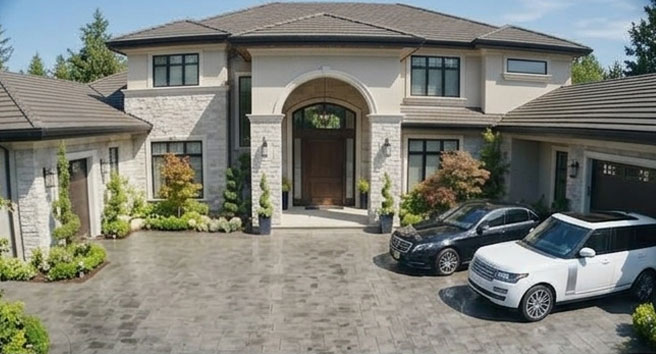
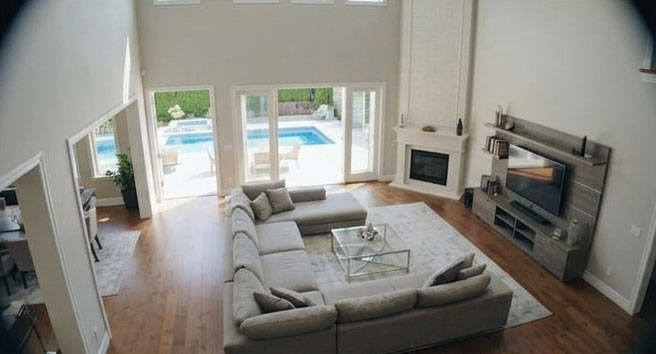
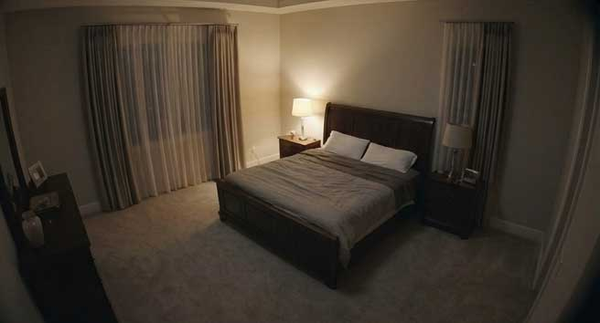
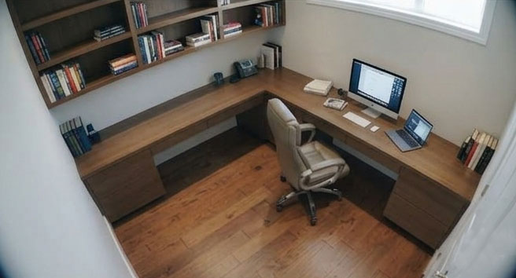

⬅ 返回
蜂鸟科技高清多维监控云台

CAM-01 // 别墅正门前庭
0000/00/00 00:00:00.000

CAM-02 // 别墅一层大厅
0000/00/00 00:00:00.000

CAM-03 // 别墅二层主卧
0000/00/00 00:00:00.000

DOWNLOADING DATA: 0%
CAM-04 // 别墅二层书房
0000/00/00 00:00:00.000